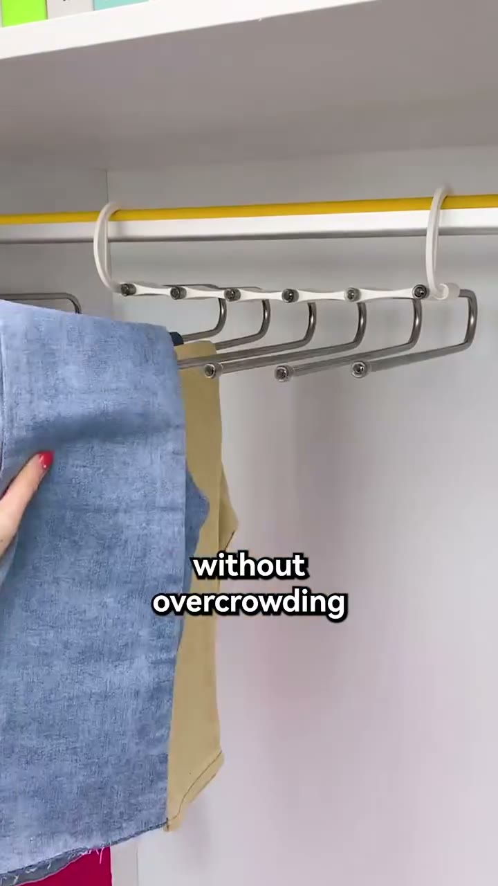
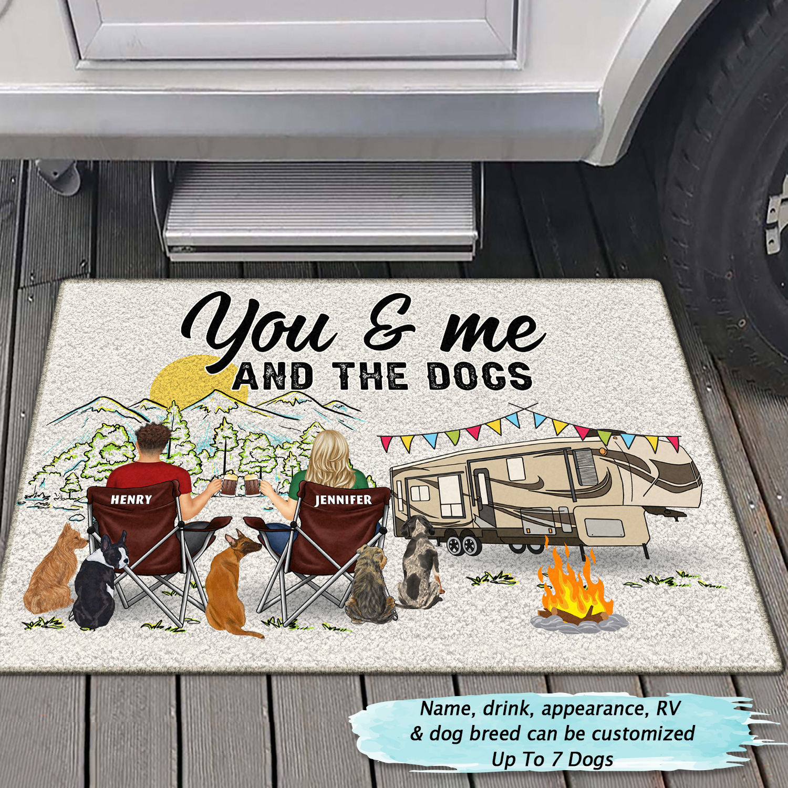
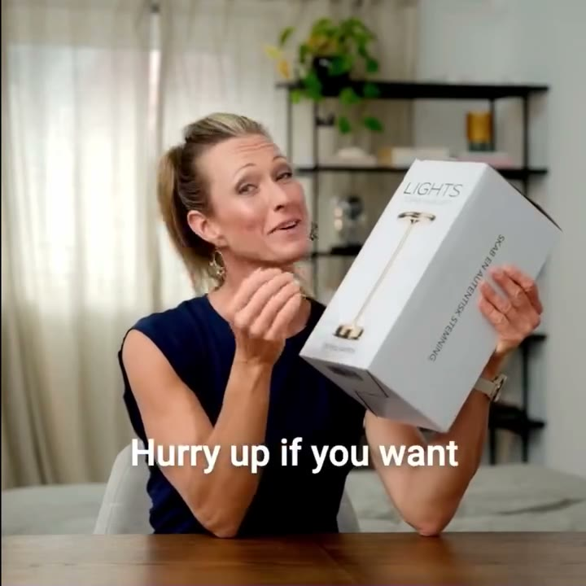
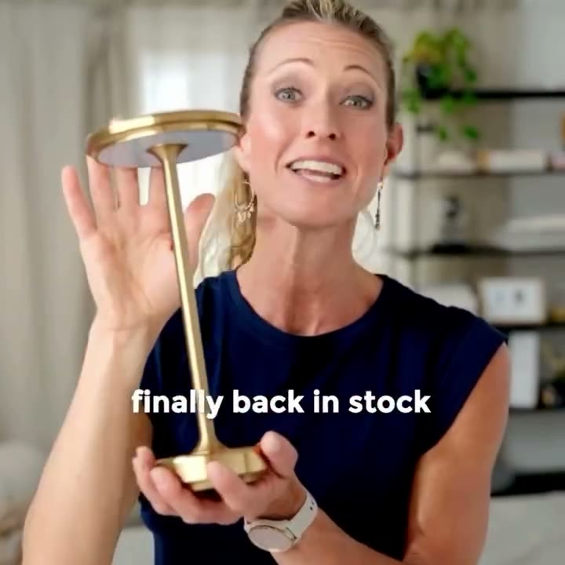
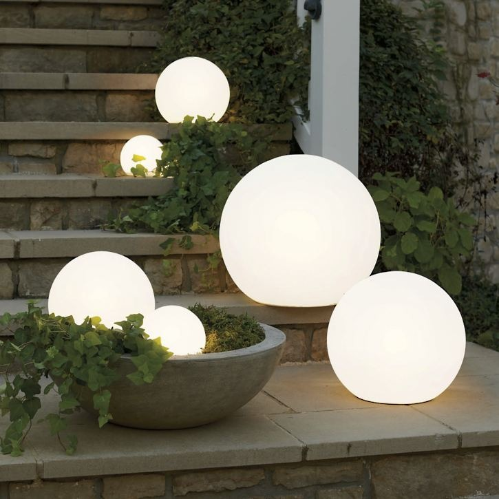
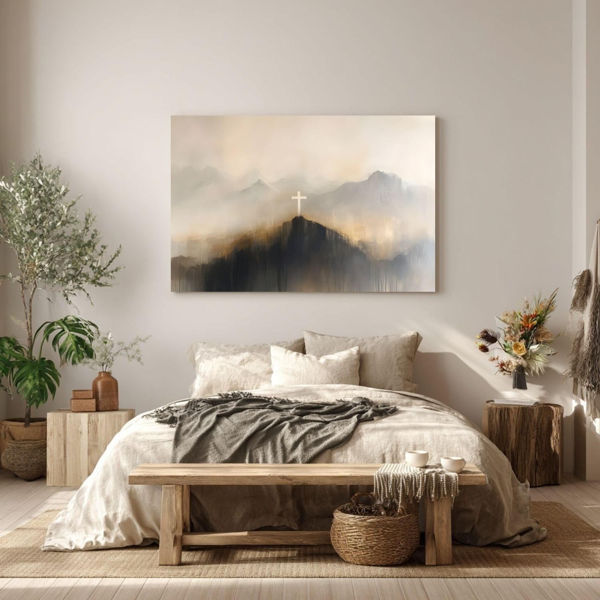
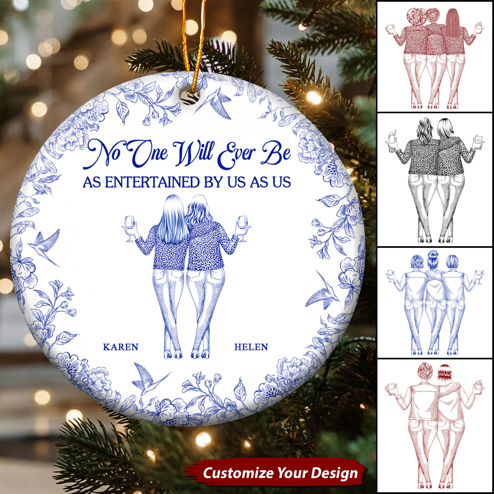
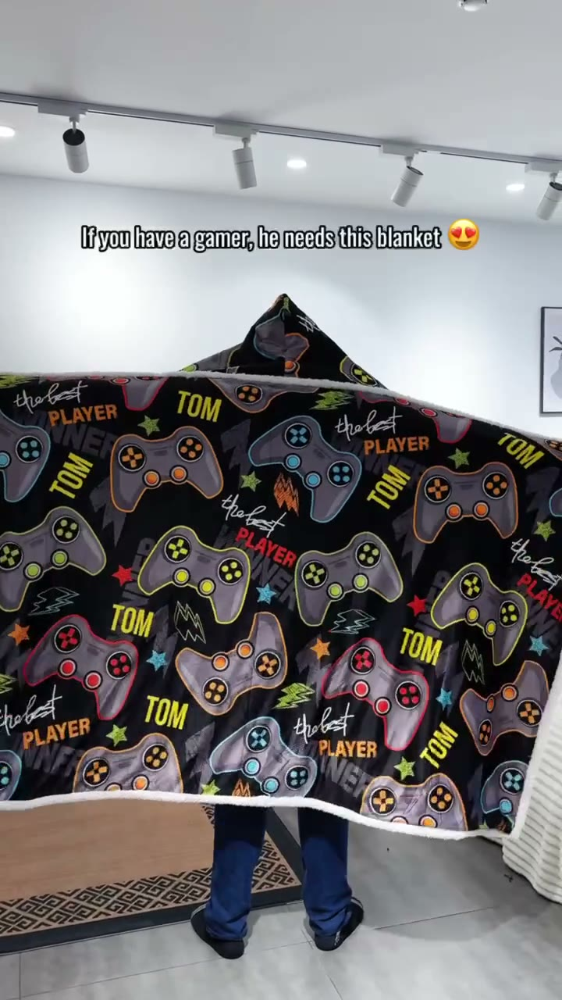
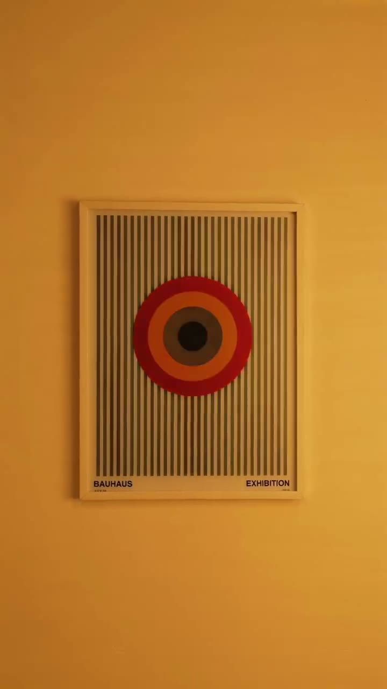

VÍDEO#1 · Home Decor Emporium
Multi-Functional Pants Rack
60% OFF our multi-functional pants rack collection as we are closing. 😢Last chance to shop today!
648 dias no ar · 2 variação(ões)
ativo
O vencedor do nicho é vídeo simples: pessoa comum mostrando o abajur, produto aceso na mesa de jantar, e uma frase só.
| Operação | Ativos | Longevidade máx. | Duplicação | Veredito | Link |
|---|---|---|---|---|---|
| Creative.Lighting | 707 | 433 dias no ar | 4,5 | MODELAR | Biblioteca ↗ |
| Stockholm-Lights | 328 | 469 dias no ar | 5,56 | MODELAR | Biblioteca ↗ |
| Lightscordless | 17 | 24 dias no ar | 1,5 | OBSERVAR | Biblioteca ↗ |
| Kiyo Home | 447 | 79 dias no ar | 1,25 | MODELAR | Biblioteca ↗ |
| Popular Lighting | 237 | 50 dias no ar | 1,83 | MODELAR | Biblioteca ↗ |
"Hurry up if you want... finally back in stock" (pessoa comum segurando o abajur e a caixa).
Stockholm-Lights, 469 dias"Overhead lights are for finding your keys. These are for everything else."
Kiyo Home, 79 dias, 10 variações"Buy 1, Get 1 Free. The cordless lamp you can put anywhere. No cord, no outlet."
Popular Lighting, 50 diasMãos instalando o cabideiro, legenda "closet so much easier".
Moderny, 648 dias"Your walls can move without a single wire or battery involved."
Pikazo, 146 diasEnfeite e manta personalizados para cada pessoa da família.
Wander Prints e Macorner, 380 a 646 diasOrdenados por dias no ar, no máximo 2 por loja. Clique em "Abrir prova" para ver fonte, datas e o que o anúncio prova.

VÍDEO60% OFF our multi-functional pants rack collection as we are closing. 😢Last chance to shop today!
Que o anúncio está no ar há 648 dias e a página continua pagando por ele.
Gasto, faturamento ou lucro.

ESTÁTICOAmazing Personalized Gift For Camping Lovers! Order here → https://wanderprints.com/hc050ngo1503 Worldwide Shipping! #wanderprints #personalized #gifts #camping #campsite #couples #doormat
Que o anúncio está no ar há 646 dias e a página continua pagando por ele.
Gasto, faturamento ou lucro.

VÍDEO✨Meet the lamp from Lights Stockholm The table lamp features a stylish Danish design, which means it will fit into any home. The lamp is also cordless and rechargeable, so you can take it with you anywhere. 💰promo code "CODESALE10" VALID TODAY ✨Check out the offer today: https://lightsstockholm.com/collections/table-lamp
Que o anúncio está no ar há 469 dias e a página continua pagando por ele.
Gasto, faturamento ou lucro.

VÍDEO⭐Create a unique atmosphere in your home with our elegant table lamp from Lights Stockholm ✔️ Swedish and Danish design ✔️ Touch-technologi ✔️ Rechargeable & wireless ✔️ Dimmer in 3 levels Buy now - https://lightsstockholm.com/
Que o anúncio está no ar há 469 dias e a página continua pagando por ele.
Gasto, faturamento ou lucro.
This ornament is the perfect way to celebrate our love. Every sparkle tells a story, and this one's written just for us 🎄💑 Order here → https://wanderprints.com/ak1676nah4834 Worldwide Shipping! #wanderprints #personalized #gifts #christmas #giftforcouple
Que o anúncio está no ar há 450 dias e a página continua pagando por ele.
Gasto, faturamento ou lucro.

ESTÁTICOQue o anúncio está no ar há 434 dias e a página continua pagando por ele.
Gasto, faturamento ou lucro.

ESTÁTICOI used to think Christian art always felt old-fashioned or tacky. So I started creating something different, pieces that are simple, modern, but still full of hope and truth! 🤍
Que o anúncio está no ar há 424 dias e a página continua pagando por ele.
Gasto, faturamento ou lucro.

ESTÁTICOEvoke endless laughter and cherished moments with a gift that keeps entertaining. Remind your friend that they don't walk alone. Perfect for any occasion. 🎁💖 #macorner #ceramicornament #friendship #unforgettableexperience #neverwalkalone
Que o anúncio está no ar há 398 dias e a página continua pagando por ele.
Gasto, faturamento ou lucro.

VÍDEO🔥 For the BEST player in the game – and in your life!🎮 ❄️ Cozy, warm & perfect for endless gaming sessions. #gaminghoodie #personalizedgift #gamerslife #gamerstyle #customhoodie #gamingmerch #blankethoodie #gamergear #cozygamer
Que o anúncio está no ar há 380 dias e a página continua pagando por ele.
Gasto, faturamento ou lucro.

VÍDEOMost people see this and immediately ask if it's a screen. It's not!! It's actually a retro printing technique that most people haven't seen blown up as wall art before. If you grew up in the 90s you've definitely come across it. The way it works is kind of like a flip book. Different versions of the same design woven together under thousands of tiny lenses. Walk past it, and it smoothly show
Que o anúncio está no ar há 146 dias e a página continua pagando por ele.
Gasto, faturamento ou lucro.
| Caso | Big idea | Gancho | Ângulo | Estrutura | Objeção | Texto na tela |
|---|---|---|---|---|---|---|
| Stockholm-Lights #1 ↗ | o abajur que todo mundo queria voltou | mulher comum segurando o abajur dourado na mão aberta | escassez + oferta em par | fala para a câmera → abajur na mão → caixa → "compre 1, leve 2" | "será que esgota de novo?" | "finally back in stock" |
| Stockholm-Lights #2 ↗ | corra antes que acabe | a mesma mulher com a caixa do abajur (texto da caixa em dinamarquês) | urgência + prova social alegada | caixa na mão → legenda → selo 4,9/5 | "é confiável?" | "Hurry up if you want" |
| Kiyo Home ↗ | a luz do teto é só para achar a chave | frase de contraste em estático editorial | aconchego, sem fio | frase → foto de cantos acesos → coleção de iluminação | "quanto dura?" ("up to 6 hours per charge") | "Warm light. Zero wires" |
| Popular Lighting ↗ | dois abajures pelo preço de um | abajur aceso na mesa de jantar, toque para regular | oferta em par + "sem tomada" | produto aceso → toque → cômodos → "Buy 1, Get 1 Free" | "é caro?" (par grátis + frete grátis) | "No cord, no outlet" |
| Estilo do criativo | Nos 10 | Leitura |
|---|---|---|
| UGC / pessoa comum | 2 | Stockholm-Lights ×2 |
| Demonstração do produto em uso | 2 | Moderny (mãos), Pikazo (quadro se mexendo) |
| Presente personalizado / peça de marca | 4 | Wander Prints ×2, Macorner ×2 |
| Still de produto / catálogo | 2 | Creative.Lighting (catálogo dinâmico), StarminStudio (quadro) |
| Formato | Roteiro | Uso |
|---|---|---|
| Vídeo 15-25s, vertical | pessoa comum + abajur apagado → toque → luz quente → frase única | anúncio principal |
| Antes e depois | sala com luz do teto fria → mesma sala só com o abajur | teste de ângulo |
| Oferta em par | dois abajures nos dois criados-mudos → "2 for $99.95" | Black Friday e Natal |
| Texto na tela, sem narração | "pov: your apartment has no outlet by the bed" | teste barato, sem precisar falar |